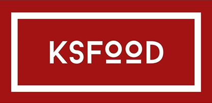
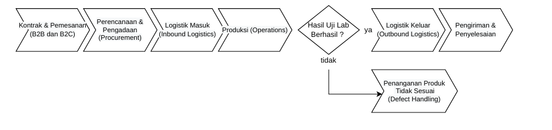
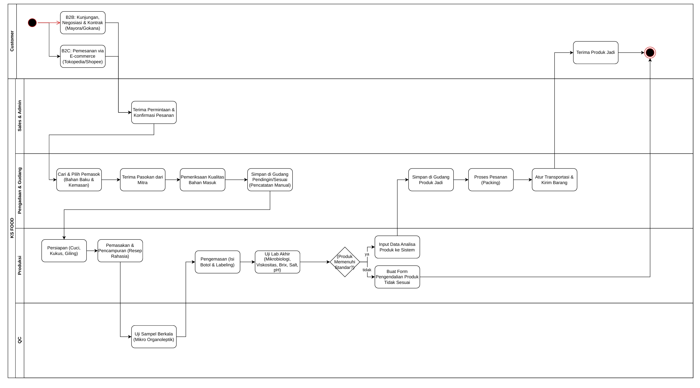
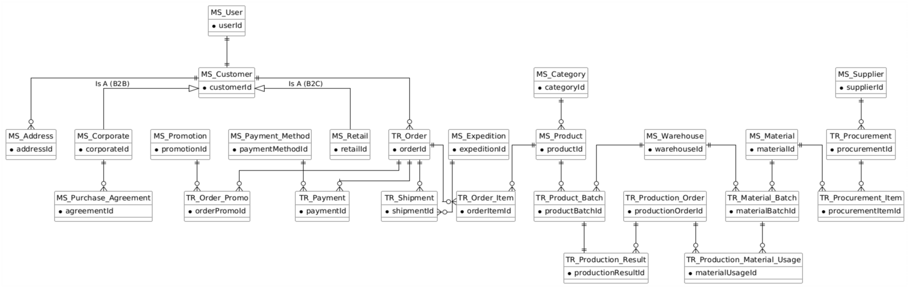
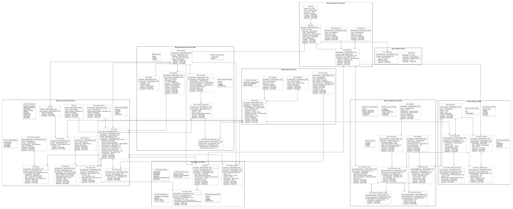

Studi Kasus: CV Kertasari Sejahtera (FMCG)
Tim Pengembang:
"GOOD TASTE, GOOD QUALITY"

Didirikan oleh Ibu Hana Witjahja. Awalnya memproduksi Kecap Cap Noni dengan alat tradisional.
Membeli tanah dan bangunan pabrik permanen. Produksi terus berkembang bertahap.
Dikelola oleh generasi kedua, Bapak Herman Witjahja. Produksi meningkat pesat (1.000 - 1.500 botol/hari).
Ekspansi produk dengan varian sambal pedas & saus tomat. Memiliki Sertifikat Halal MUI & izin Dep.Kes RI.


Kombinasi alat terpisah yang saat ini digunakan KS FOOD:
Mengarahkan pelanggan B2C ke platform e-commerce.
Khusus pembuatan invoice, PO, pajak. Kendala: Kesulitan sinkronisasi stok.
Digunakan admin pabrik untuk beberapa rekapitulasi digital terpisah.
Digunakan terpisah untuk deteksi kehadiran karyawan.
Alat dominan untuk pencatatan stok dan hasil produksi di lapangan.
"Merancang database terintegrasi dari pengadaan bahan baku hingga distribusi untuk akurasi real-time."
Mengumpulkan data dari dokumen kertas (Surat Jalan, QC), aplikasi "Accurate", dan observasi lapangan melalui tiga tahap:
Untuk menjaga konsistensi, ERP ini dirancang dengan aturan baku:
kodeBarang, tanggalMasuk).Decimal/Integer
akurat untuk konversi satuan resep rahasia (gram, ml).Solusi dieksekusi melalui pendekatan siklus hidup sistem database (DBSDLC):
Mendefinisikan misi sistem dan membatasi ruang lingkup (System Definition).
Analisis kebutuhan data tiap departemen melalui pengumpulan fakta.
Merancang Conceptual (ERD awal), Logical, hingga Physical Design (SQL).
Membangun antarmuka User (B2B, Admin) yang terhubung dengan database.
Sistem mencakup manajemen dari hulu ke hilir:
Tidak membuat cetak fisik Surat Jalan manual/Airway Bill ekspedisi pihak ketiga.
Tidak mencakup perhitungan Bill of Materials (BOM) presisi, parameter suhu/proses masak, dan form lab Quality Control.
Tidak mencakup modul penggajian atau manajemen sumber daya manusia yang kompleks.
Bukan sistem akuntansi General Ledger (Buku Besar) untuk jurnal debit/kredit, neraca, SPT Pajak, kalkulasi PPN/Invoicing rinci.
Melihat katalog, shopping cart, checkout, integrasi Payment Gateway. Khusus B2B: Portal harga grosir, unggah PO, dan riwayat invoice.
Validasi pemindaian QR Code (Scan In/Out), peringatan jatuh tempo expired date (FEFO), pencetakan Surat Jalan B2B & input resi kurir.
Akses Job Order produksi, scan-out pengurangan bahan baku (FEFO), cetak QR Code/batch baru untuk barang jadi secara real-time.
Dashboard laporan sirkulasi stok, fitur notifikasi persetujuan (approval digital), dan laporan perbandingan penjualan antar-kanal.
Tahap awal memetakan objek bisnis inti ke dalam tiga domain utama yang saling terintegrasi:
Memastikan integritas data lintas modul dengan notasi Crow's Foot.
Entitas profil MS_Customer diturunkan spesifik menjadi MS_Corporate (B2B) atau MS_Retail (B2C) untuk mengelola atribut yang berbeda secara rapi.
Satu pesanan dapat menggunakan banyak promo, dan sebaliknya. Relasi ini dijembatani entitas pivot TR_Order_Promo (1:M).
TR_Production_Result diikat ke TR_Product_Batch. Setiap "panen" hasil masak yang lolos QC otomatis menciptakan satu batch barang jadi baru di Gudang.

Melalui pendekatan Top-Down dan pengujian 1NF-4NF, 26 entitas konseptual diekspansi menjadi 44 struktur tabel. Berikut adalah penjabaran entitas dan relasi Primary Key (PK) & Foreign Key (FK).
Lanjutan penjabaran 44 entitas operasional untuk 4 modul lainnya.
Pengujian normalisasi dari bentuk Unnormalized Form (UNF) hingga Third Normal Form (3NF) pada 3 dokumen fisik:
[Klik untuk lihat Dokumen]
Memecah repeating groups item belanja, dan menghilangkan transitive dependency data alamat Supplier.
[Klik untuk lihat Dokumen]
Memisahkan atribut aktor (Parap Pengambil/Pemeriksa) menjadi referensi ke entitas MS_Employee.
[Klik untuk lihat Dokumen]
Menghilangkan ketergantungan parsial nama produk terhadap kode dokumen (MS_Product).
Contoh tahap normalisasi dari UNF menuju 3NF untuk Pesanan Pembelian (PO).
| No_PO | Tanggal | Nama_Supplier | Kode_Bahan | Nama_Bahan | Qty |
|---|---|---|---|---|---|
| PO-001 | 10-Oct-26 | PT Sayur Segar | B-001, B-002 | Tomat, Bawang | 500, 100 |
| No_PO (PK) | Nama_Supplier |
|---|---|
| PO-001 | PT Sayur Segar |
| No_PO (FK) | Kode_Bahan (FK) | Qty |
|---|---|---|
| PO-001 | B-001 | 500 |
| PO-001 | B-002 | 100 |
Entitas Supplier dipisahkan menjadi tabel Master MS_Supplier. Struktur akhir menjadi TR_Procurement dan TR_Procurement_Item yang selaras dengan Logical Schema Top-Down.
Tahap normalisasi dari UNF menuju 3NF untuk Form Pengambilan Bahan Harian.
| No_Form | Tgl | Parap_Pengambil | Parap_Pemeriksa | Kode_Bahan | Nama_Bahan | Qty |
|---|---|---|---|---|---|---|
| PB-001 | 10-Oct | Budi (Prod) | Andi (Gudang) | B-001, B-002 | Tomat, Bawang | 50, 10 |
| No_Form (PK) | Pengambil | Pemeriksa |
|---|---|---|
| PB-001 | Budi (Prod) | Andi (Gudang) |
| No_Form (FK) | Kode_Bahan (FK) | Qty |
|---|---|---|
| PB-001 | B-001 | 50 |
| PB-001 | B-002 | 10 |
Entitas Karyawan (Pengambil & Pemeriksa) dipisahkan menjadi referensi ke tabel Master MS_Employee. Struktur akhir dikonversi menjadi TR_Production_Material_Usage dan item detailnya.
Tahap normalisasi dari UNF menuju 3NF untuk Laporan Hasil Produksi.
| No_Laporan | Tgl | Shift | Kode_Produk | Nama_Produk | Qty_Bagus | Qty_Reject |
|---|---|---|---|---|---|---|
| LP-001 | 10-Oct | Pagi | P-001, P-002 | Saus Tomat, Saus Sambal | 100, 200 | 2, 5 |
| No_Laporan (PK) | Shift |
|---|---|
| LP-001 | Pagi |
| No_Laporan (FK) | Kode_Produk (FK) | Qty_Bagus | Qty_Reject |
|---|---|---|---|
| LP-001 | P-001 | 100 | 2 |
| LP-001 | P-002 | 200 | 5 |
Atribut Nama_Produk bergantung sepenuhnya
pada Kode_Produk, sehingga dipisah ke MS_Product. Hasil akhirnya
direpresentasikan pada tabel TR_Production_Result.
Representasi final dari 44 tabel basis data yang siap diimplementasikan secara fisik (DDL).
Diagram ini menampakkan Primary Key yang kuat serta relasi Foreign Key yang menghubungkan antar modul dengan ketat (Referential Integrity).
Resolusi entitas perantara (seperti TR_Order_Item dan TR_Product_Stock_Movement) yang mampu menangkap data transaksional kompleks tanpa pengulangan.

Berikut adalah lampiran dokumen PDF yang memuat rincian tabel, tipe data, nilai default, status (wajib/opsional), beserta deskripsi untuk seluruh 44 entitas.
Translasi Logical Schema menjadi tabel fisik di DBMS MariaDB beserta pengujian manipulasinya.
Pembuatan tabel dengan mendefinisikan tipe data, batas maksimal, dan Constraints (Primary & Foreign Key).
CREATE TABLE `ms_customer` (
`customerId` varchar(20) NOT NULL,
`userId` varchar(20) NOT NULL,
`fullName` varchar(100) NOT NULL,
`type` enum('CORPORATE','RETAIL') NOT NULL,
`isActive` tinyint(1) NOT NULL DEFAULT 1,
`createdAt` datetime NOT NULL DEFAULT current_timestamp(),
PRIMARY KEY (`customerId`),
CONSTRAINT `fk_cust_user` FOREIGN KEY (`userId`)
REFERENCES `ms_user` (`userId`)
) ENGINE=InnoDB DEFAULT CHARSET=utf8mb4;Pengujian operasi query dasar
seperti `INSERT`, `UPDATE`, `DELETE`, dan SELECT JOIN antar modul.
-- Contoh Insert Data Master
INSERT INTO `ms_category` (`categoryId`, `name`)
VALUES ('CAT-01', 'Bahan Baku Mentah');
-- Contoh Query Multi-Join (Pelacakan PO)
SELECT p.procurementId, s.companyName, p.totalAmount
FROM tr_procurement p
JOIN ms_supplier s ON p.supplierId = s.supplierId
WHERE p.status = 'COMPLETED'
ORDER BY p.createdAt DESC;Penerapan keamanan Role-Based Access dan perlindungan integritas data melalui mekanisme transaksi.
Membatasi akses pengguna (Grant & Revoke) ke objek basis data berdasarkan wewenangnya (misal: Admin Gudang).
-- Membuat User Gudang
CREATE USER 'wms_admin'@'localhost'
IDENTIFIED BY 'wms#123';
-- Hak Akses Khusus Modul Gudang
GRANT SELECT, INSERT, UPDATE
ON ksfood.tr_product_batch
TO 'wms_admin'@'localhost';Menjamin rentetan operasi rentan (seperti pemotongan stok berantai) dieksekusi secara Atomik.
START TRANSACTION;
-- Mengurangi stok batch
UPDATE tr_product_batch
SET currentStock = currentStock - 10
WHERE productBatchId = 'BAT-99';
-- Mencatat histori pergerakan
INSERT INTO tr_stock_movement (...) VALUES (...);
COMMIT; -- Simpan jika semua sukses
-- ROLLBACK; -- Batalkan jika terjadi errorDiagram relasi struktur fisik 44 tabel hasil generate DBMS (phpMyAdmin / MariaDB).